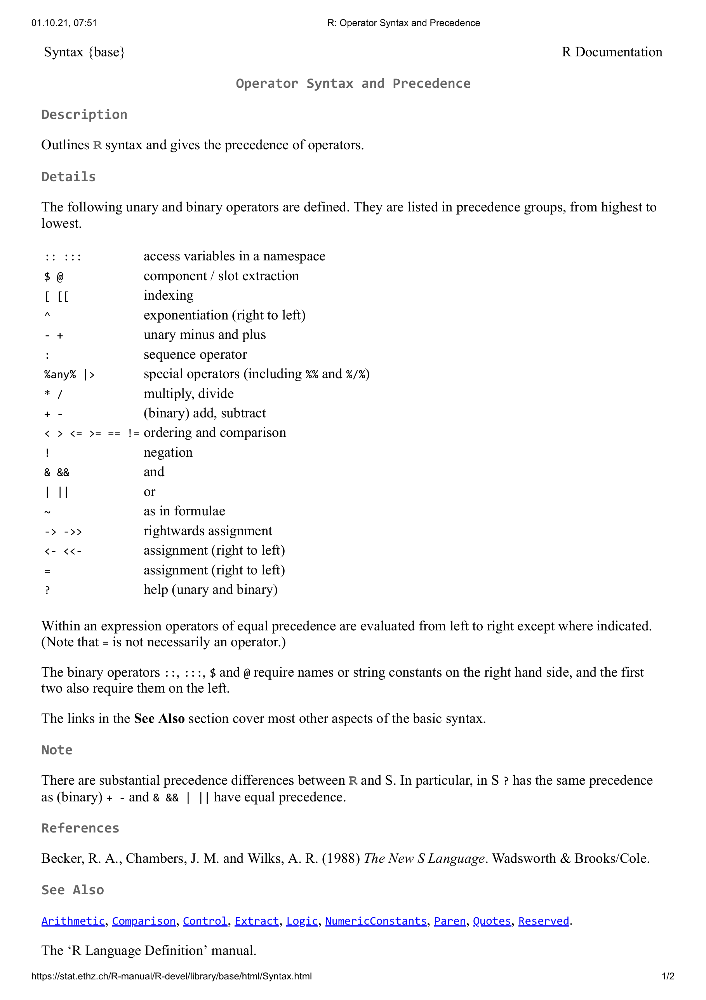
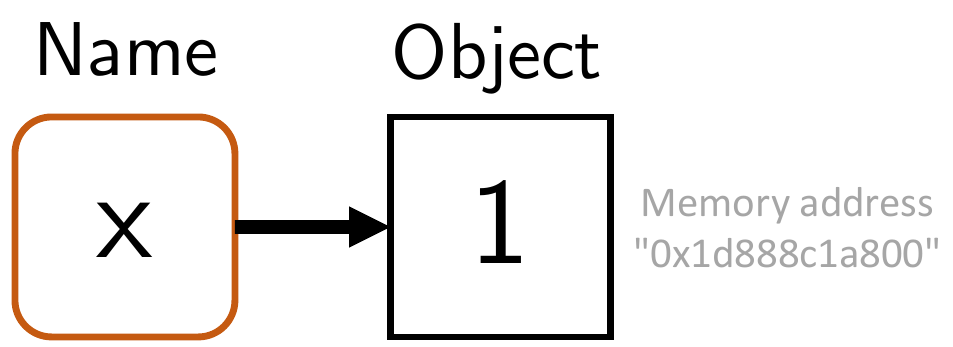
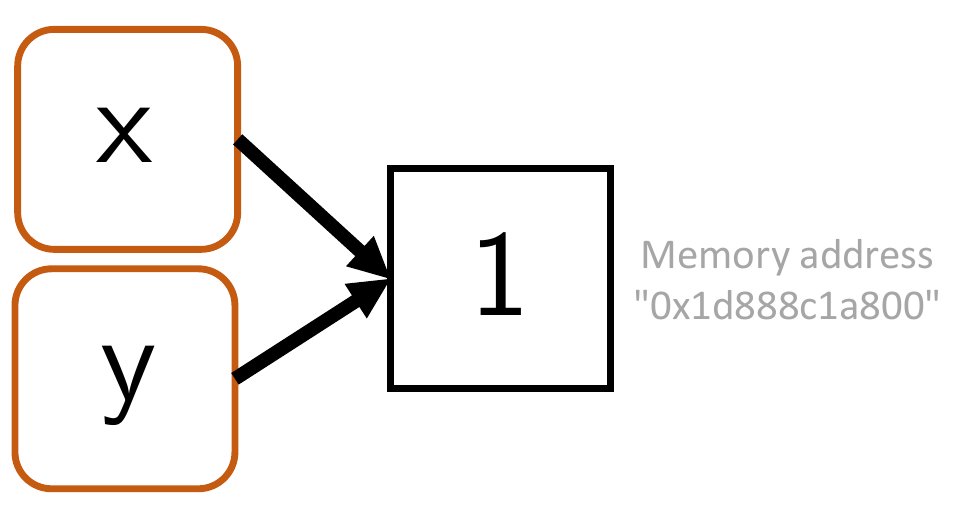
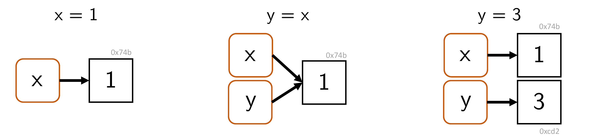
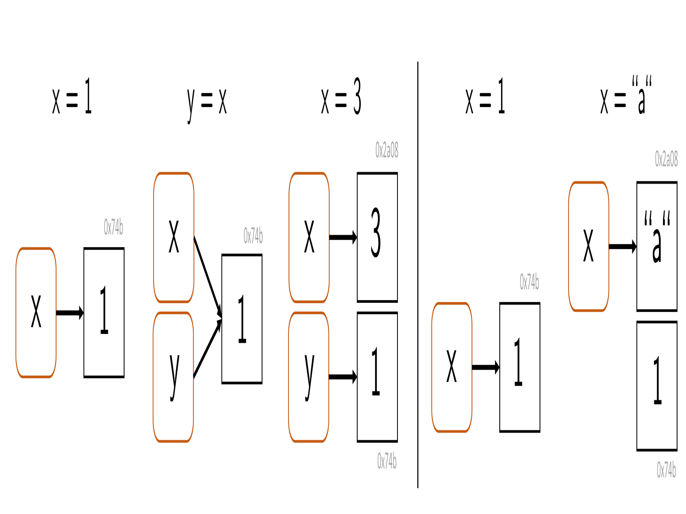

[1] 212 Arithmetic and variables
12.1 Arithmetic
If one opens an R terminal, one can first use it as a calculator, as the following example shows.
In the terminal, this shows, on the one hand, the result \(2\) and, on the other hand, with [1], an indication that the result is the first entry in the result vector generated by R. We will discuss vectors in detail later. Further examples of using an R terminal as a calculator are the following.
Table 12.1 gives an initial overview of the arithmetic operators available in Base R. In addition to the familiar operations of addition, subtraction, multiplication, division, and exponentiation, Base R also offers special operators for more advanced arithmetic computations. These include, for example, matrix multiplication, integer division (5 %/% 2 = 2), and the modulo operation, which returns the remainder of an integer division (5 %% 2 = 1).
| Operation | Operator |
|---|---|
| Addition | + |
| Subtraction | - |
| Multiplication | * |
| Division | / |
| Power | ^ |
| Matrix multiplication | %*% |
| Integer division | %/% |
| Modulo operation | %% |
In addition to the arithmetic operators for combining two numbers, Base R naturally also offers the possibility of evaluating standard mathematical functions. Table 12.2 gives an initial overview.
| Function | Call |
|---|---|
| Exponential function | exp(x) |
| Logarithm function | log(x) |
| Absolute value | abs(x) |
| Square root | sqrt(x) |
| Round up | ceiling(x) |
| Round down | floor(x) |
| Mathematical rounding | round(x) |
Although the operators listed in Table 12.1 and the functions listed in Table 12.2 seem to have a somewhat different character at first glance, Base R does not formally distinguish between operators and functions. In particular, operators can also be used and understood as functions of several arguments by means of so-called infix notation. The R code below shows how the arithmetic combination \(2 + 3\) can be understood as the execution of a function of the form \(+ : \mathbb{R}^2 \to \mathbb{R}\) with the name “+”.
Finally, like every programming language, Base R also offers the possibility of evaluating expressions with respect to their logical content. Here, logic is to be understood in the sense of the propositional logic from Chapter 1, in which statements can take one of two values, true (TRUE) or false (FALSE). The relational operators <, <=, >, and >= listed in Table 12.3 are usually applied to numerical values. The equality operators == and != can be applied to arbitrary data structures. Finally, the operators for combining logical values, & and |, correspond to the concepts of logical conjunction (“and”) and disjunction (“non-exclusive or”) known from Chapter 1.
| Logical connection | Operator |
|---|---|
| Equal | == |
| Unequal | != |
| Conjunction | & |
| Disjunction | | |
| Less than | < |
| Less than or equal | <= |
The operators and functions listed in Table 12.1, Table 12.2, and Table 12.3 represent only a small excerpt of the operators and functions provided by Base R. A complete overview is provided by the call names(methods:::.BasicFunsList), which lists the names of all functions provided by Base R. We will get to know many of these functions later.
[1] "$" "$<-" "["
[4] "[<-" "[[" "[[<-"
[7] "crossprod" "tcrossprod" "xtfrm"
[10] "c" "all" "any"
[13] "sum" "prod" "max"
[16] "min" "range" "cummax"
[19] "rep" "^" "cos"
[22] "levels<-" "cumsum" "asin"
[25] "anyNA" "<=" "Conj"
[28] "exp" "is.matrix" "log10"
[31] "as.environment" "ceiling" "asinh"
[34] "abs" "as.raw" "is.infinite"
[37] "is.array" "floor" "=="
[40] "sign" "cummin" "|"
[43] "round" "Re" "!"
[46] "is.numeric" "acosh" "!="
[49] "names<-" "&" "atanh"
[52] "sinh" ">=" "sin"
[55] "*" "atan" "+"
[58] "length" "length<-" "sinpi"
[61] "-" "is.nan" "/"
[64] "sqrt" "%/%" "as.numeric"
[67] "seq.int" "trunc" "digamma"
[70] "acos" "<" "as.logical"
[73] "cosh" "Mod" "tanpi"
[76] "%*%" "dimnames<-" "log2"
[79] ">" "tanh" "is.na"
[82] "dim" "signif" "gamma"
[85] "is.finite" "as.integer" "dim<-"
[88] "as.double" "lgamma" "Arg"
[91] "log1p" "trigamma" "%%"
[94] "tan" "cumprod" "Im"
[97] "expm1" "as.call" "log"
[100] "as.complex" "cospi" "as.character"
[103] "dimnames" "names" "("
[106] ":" "=" "@"
[109] "{" "~" "&&"
[112] ".C" "baseenv" "quote"
[115] "::" "<-" "is.name"
[118] "if" "||" "attr<-"
[121] "untracemem" ".cache_class" "substitute"
[124] "interactive" "is.call" "switch"
[127] "function" "is.single" "is.null"
[130] "is.language" "is.pairlist" ".External.graphics"
[133] "declare" "globalenv" "class<-"
[136] ".Primitive" "is.logical" "enc2utf8"
[139] "UseMethod" ".subset" "proc.time"
[142] "enc2native" "repeat" ":::"
[145] "<<-" "@<-" "missing"
[148] "nargs" "isS4" ".isMethodsDispatchOn"
[151] "forceAndCall" "Exec" ".primTrace"
[154] "storage.mode<-" ".Call" "unclass"
[157] "gc.time" ".subset2" "environment<-"
[160] "emptyenv" "seq_len" ".External2"
[163] "is.symbol" "class" "on.exit"
[166] "is.raw" "for" "is.complex"
[169] "list" "invisible" "is.character"
[172] "oldClass<-" "is.environment" "attributes"
[175] "break" "return" "attr"
[178] "tracemem" "next" ".Call.graphics"
[181] "standardGeneric" "is.atomic" "retracemem"
[184] "expression" "is.expression" "call"
[187] "is.object" "pos.to.env" "attributes<-"
[190] ".primUntrace" "...length" "Tailcall"
[193] ".External" "oldClass" ".Internal"
[196] ".Fortran" "browser" "is.double"
[199] ".class2" "while" "nzchar"
[202] "is.list" "lazyLoadDBfetch" "unCfillPOSIXlt"
[205] "...elt" "...names" "is.integer"
[208] "is.function" "is.recursive" "seq_along"
[211] "unlist" "as.vector" "lengths" 12.2 Precedence
An important property when using operators is their precedence, as defined by the respective programming language. These are rules specified by the developers of programming languages that determine the order of operations. From mathematics, one is especially familiar with the precedence rule “multiplication and division before addition and subtraction”. This rule says that in expressions containing both products or divisions and sums or differences, the products or divisions are carried out first, and their results then enter the formation of sums or differences second. Thus, for example, \[ 2 \cdot 5 - 3 = 10 - 3 = 7 \tag{12.1}\] and not, for instance, \[ 2 \cdot 5 - 3 \neq 2 \cdot 2 = 4. \tag{12.2}\] We assume as known that precedence rules can be emphasized or overridden by parentheses. For example, the expression in Equation 12.1 is equivalent to \[ (2 \cdot 5) - 3 = 10 - 3 = 7 \tag{12.3}\] and the calculation intended in Equation 12.2 can be made correct by placing parentheses as \[ 2 \cdot (5 - 3) = 2 \cdot 2 = 4 \tag{12.4}\] These familiar calculation rules and their overriding by parentheses are implemented correspondingly in R:
Another precedence rule assumed to be known is that powers have higher precedence than products or divisions and sums or differences. Thus, for example, \[\begin{equation} 2^3 + 3 = (2\cdot 2 \cdot 2) + 3 = 8 + 3 = 11 \end{equation}\] and not, for instance, \[\begin{equation} 2^3 + 3 \neq 2^{3 + 3} = 2^6 = 64. \end{equation}\] Correspondingly, in R we have
An important special feature of the precedence rules in R is that unary signs, that is, signs that identify a number as a negative number, also fall within the domain of operator precedence. Although one might be inclined to interpret an expression of the form \(-1^2\) as \((-1)^2 = 1\), R nevertheless follows the rule that in \(-1^2\) the power is evaluated first and the sign afterward, so that \(-1^2 = -(1^2) = -1\) holds:
Furthermore, in R, powers are processed from right to left, whereas products, divisions, sums, and differences are processed from left to right. For example,
but
[1] 5.75[1] 2.15In general, in programming one should not guess precedence rules or try to derive them logically. Nor should one trust that the developers of a programming language will probably have implemented the precedence rules according to one’s own state of knowledge. Instead, one should always check computations critically and, to be safe, emphasize the intended calculation with parentheses once too often rather than once too little.
In addition to the precedence rules considered here for the basic arithmetic operations, R has a whole series of further rules for dealing with many other operators, of which we have so far become familiar with only very few. When becoming familiar with a new operator while learning a programming language, one should therefore also make sure to clarify the precedence of this operator. The text from the R documentation shown in Figure 12.1, which can be called with the command ?Syntax, discusses the precedence rules that apply in R in full and should be consulted frequently when working with R.

12.3 Variables
In programming, variables are abstract containers for data whose contents can be changed during the execution of a program. Variables are denoted by names in program code and, during program execution, have an address in working memory. Variables can be of different types. This means that variables represent different kinds of data, and only those kinds. In traditional programming languages, the type of a variable is explicitly declared. At the beginning of program execution, it is specified which kind of data a particular variable can represent. The declaration of a variable A, which, for example, can represent integers and only integers, has roughly the form
Subsequently, the variable A can be assigned a value of type integer, for example in the form
In a 4GL language such as R, the variable type is usually specified directly by an initialization statement. Thus, the following R code simultaneously declares the variable a as being of type double (decimal number) with the value 1,
In the vast majority of programming languages, the assignment command is =. R is special in this respect because it allows the additional assignment commands <- and ->: <- assigns from right to left, -> from left to right. The usual assignment from right to left is also achieved by =. The officially recommended assignment command for R is <-. This is, however, highly idiosyncratic, and we mostly use =, as in every other programming language. A first example should illustrate how to work with variables.
Example
We consider the following task:
“Lina goes to the stationery store and buys four notebooks and two pens. One notebook costs 1 euro and one pen costs 3 euros. How many items does Lina buy in total, and how many euros does Lina have to pay in total?”
To solve the task, we first define the variables number_notebooks and number_pens and assign to them their respective values from the task.
After assignment, the variables with their assigned values now exist in working memory, the so-called workspace. The command ls() displays the existing usable variables in working memory.
The crucial point is that the variable names can now be used like numbers in computations. print() outputs variable values in an R terminal:
To calculate the total price, we next define the variables price_notebook and price_pen according to the task specification.
The total price is then calculated as follows.
Variables in the workspace can also be deleted again. rm() (remove) allows individual variables to be deleted.
[1] "number_notebooks" "number_pens" "price_notebook" "price_pen"
[5] "total_items" rm(list=ls()) deletes all variables.
Variable names
In principle, one is free to choose names for variables, with minor restrictions. Admissible variable names in R
- consist of letters, numbers, periods (.), and underscores (_),
- begin with a letter or a period, but then not followed by a number,
- must not be expressions already reserved in R, such as
for,if,NaN, …
The help page ?reserved provides assistance with the restrictions on variable names. A function for generating a syntactically admissible variable name from arbitrary suggestions is make.names(). Its help page also describes the rules for variable naming sketched here in further detail. In general, useful variables are short, to save space in the code, and meaningful, to increase human understanding of the code. Variables usually consist only of lowercase letters and underscores.
Variable representation
We now want to examine the relationship between variable names (identifiers) and variable contents (objects in working memory) in a little more detail. The following concepts and relationships are especially important when computations reach the limits of the available working memory and must be optimized.
We begin with the concept of binding. To do so, we first consider the following variable initialization:
Intuitively, this statement creates a variable named x with the value 1. At the technical level, two things happen (cf. Figure 12.2):
- R creates an object (a vector with value 1) with working-memory address
lobstr::obj_addr(x). - R connects this object with the name
x(binding), which references the object in working memory.

Now consider the following statement:
Intuitively, this creates a variable named y with a value equal to the value of x. At the technical level, a new name y is created that references the same object in working memory as x (cf. Figure 12.3).

One can use lobstr::obj_addr(x) and lobstr::obj_addr(y) to verify that the addresses of the object in working memory are identical:
Thus, the relevant object is not copied when assigned to y. This saves working memory.
Furthermore, R uses the so-called copy-on-modify principle. This principle states that an object in working memory is copied and receives a new address as soon as it is modified. The original object in working memory remains unchanged. Figure 12.4 and the following R code first illustrate the copy-on-modify principle:
[1] 3
y is the value copied in working memory.
The fact that objects are copied in working memory when they are changed, while the original objects are in principle preserved unchanged, is also referred to as the immutability of objects in R. However, the immutability of objects in R does not go very far, as the following example shows. First, an object of a 1 is created in working memory and can be referenced with the variable name x. By indexing (cf. Chapter 13), the object is then readdressed in working memory when an intended modification takes place.
[1] "0x2135a6601f8"[1] "0x2135a79f620"The copy-on-modify principle also applies in the reverse order. That is, if an object to which another variable name points is changed, the originally referenced object does not change. The following R code may illustrate this.
[1] 1Finally, unbinding of objects in working memory is also possible, for example as a consequence of the following R commands (cf. Figure 12.5):

The deletion of unreferenced objects in working memory is called garbage collection. R automatically deletes unreferenced objects in working memory, although usually only when the memory is needed. In general, however, this works well, and it is usually not necessary to actively use the function gc() provided by R for garbage collection.
Representation of missing values
In data-analytic programming, one often has to deal with missing values, for example when an experimental measurement for a participant had to be aborted. To represent missing values, R uses NA (not available). If one attempts to calculate with NA, the result is usually again NA:
[1] 1One tests for NA with is.na():
[1] NA NA NA NAIn addition to NA, R also has NaN as a way to represent mathematically undefined values. In contrast to NA, NaN is always of numerical type. The results when calculating with NaN are similar to those with NA.
[1] 1One tests for NaN with is.nan().